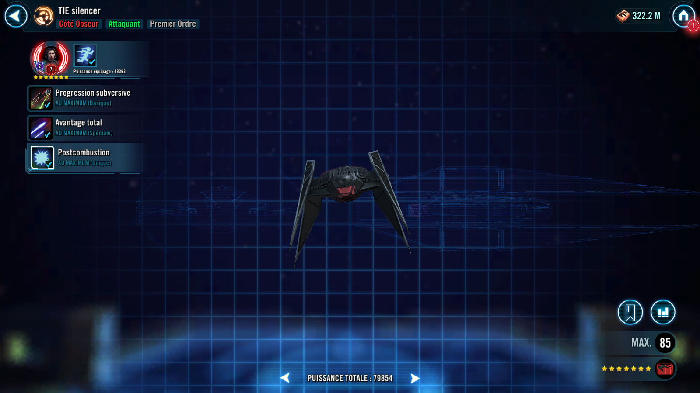
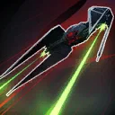
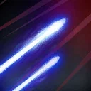

TIE Silencer
Superior First Order Attacker that gains unlimited speed and deals massive damage
Superior First Order Attacker that gains unlimited speed and deals massive damage



Each time the TIE silencer is damaged or damages a Target Locked enemy, it gains +10% Turn Meter and +15% Offense (stacking) until the end of the encounter.

Deal Physical damage to target enemy and Stun them for 1 turn if they have more than 50% Turn Meter. Otherwise, gain Advantage for 2 turns.

Deal Physical damage to target enemy. If the TIE silencer has Advantage, this attack deals 100% more damage. If this attack defeats an enemy, gain 20% Turn Meter and Foresight for 2 turns.

Enter Battle : The TIE silencer gains +25% Offense and the Afterburner buff, which can't be prevented or Dispelled.
Afterburner: When the TIE silencer attacks with Advantage, reduce its cooldowns by 1. When a First Order ally takes damage, the TIE silencer has a 50% chance to gain Advantage for 2 turns.